The 7-Step Pipeline
z(x, y) in meters.z_real = k · z_model.V = Σ h · A_px, weight = V · density, kcal per 100 g.1 · End-to-End Flow
Infographic of all seven steps, showing the input photo, instance masks, and calibrated depth map.
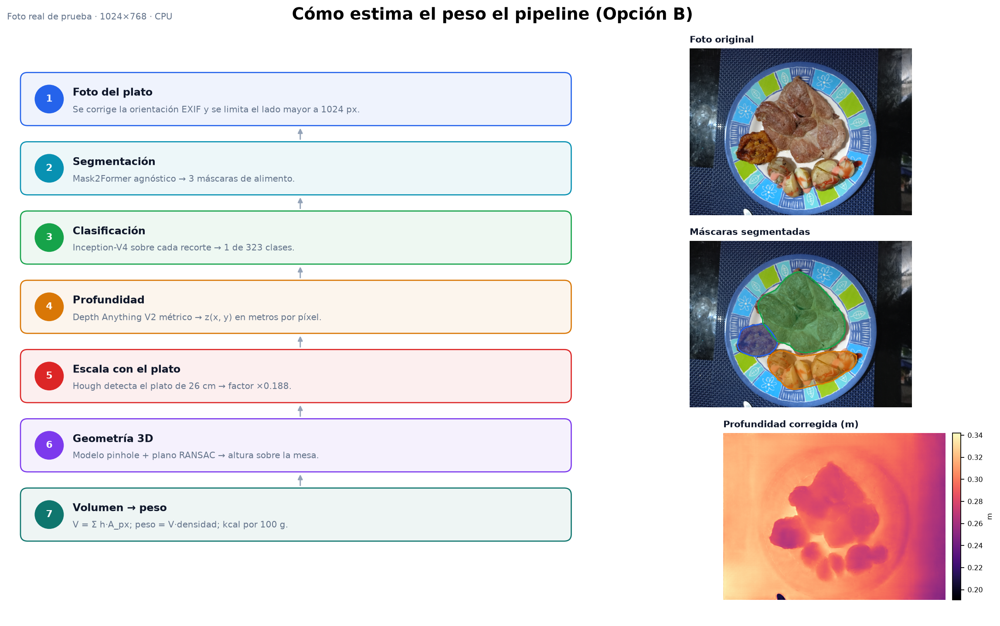
2 · From Depth Map to Volume
Raw monocular depth estimates a ~1.58 m median; the 26 cm plate calibrates scale to ~0.30 m. Each pixel is then back-projected to 3D and measured above the table plane.
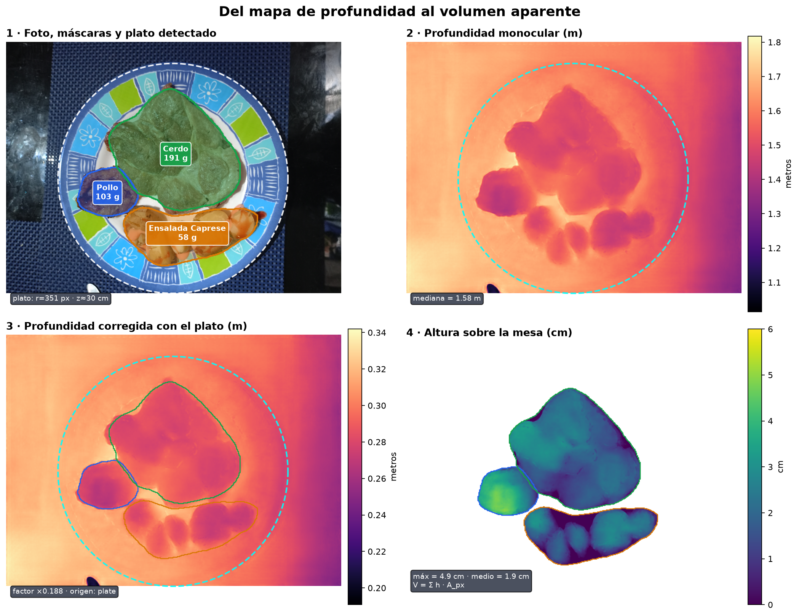
3 · 3D Surface per Food Item
Height above the table (cm) and apparent volume. Volume accounts only for geometry visible to the camera.
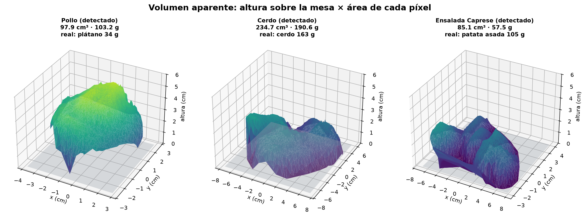
4 · Plate Result
Masks, detected classes, volume, density, weight, and calories. The summary card shows plate totals.
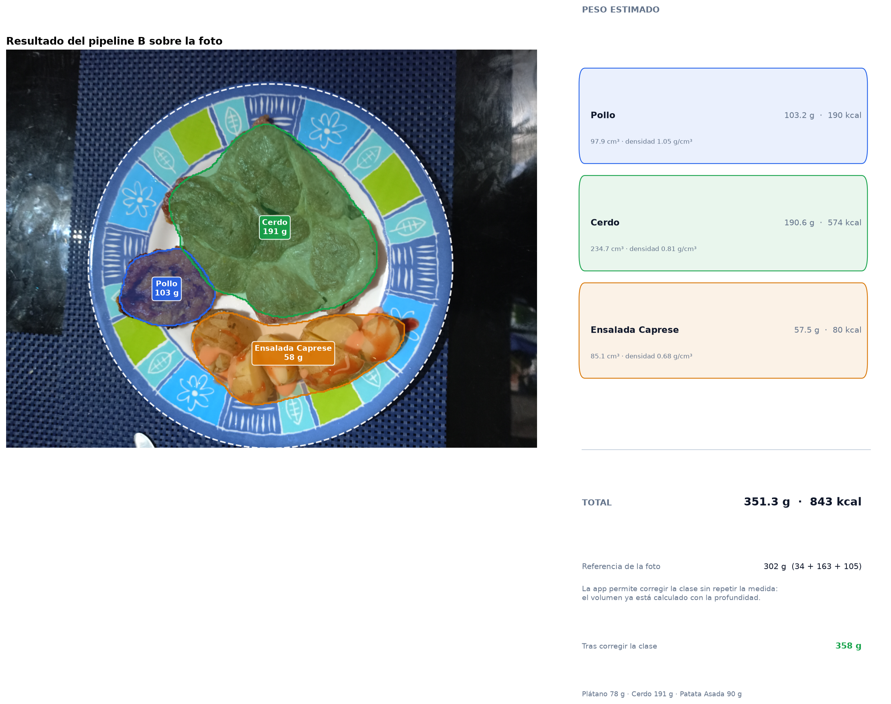
5 · Estimated vs. Ground-Truth Weight
Class selection only changes density; volume comes from depth. Grilled pork is the closest match.
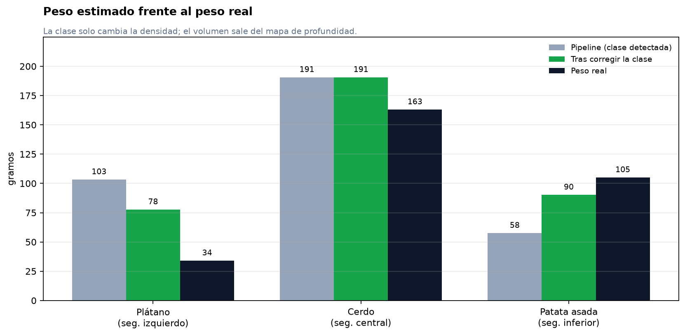
6 · Class Correction in the App
Masks and volumes stay fixed; correcting the class swaps density and updates weight deterministically.
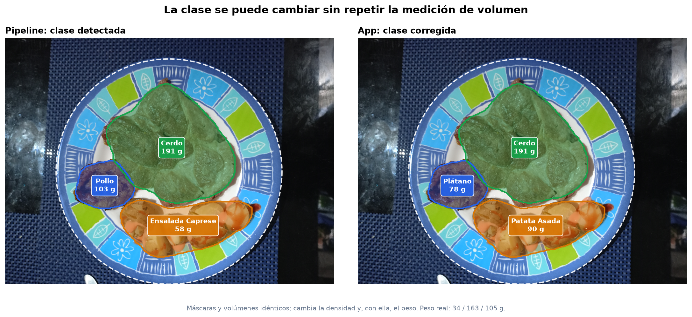
How the 323-Class Table Was Built
Each dataset class is mapped to a USDA FoodData Central entry, per-100 g nutrients, and an apparent density (g/cm³) to convert volume into grams. All 323 rows were manually reviewed, with energy coherence and a 20-class sample verified. Full mapping details.
7 · Mapping Workflow
From the 323 raw classes to the final table: USDA candidates, manual review, nutrients, density, validation, and app CSV export.
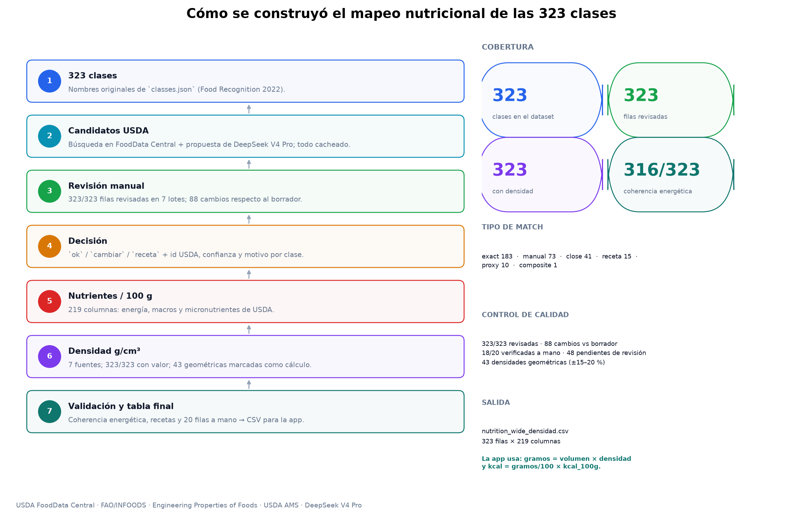
8 · Coverage & Quality
183 exact matches, 73 manual, 41 close, 15 recipe, 10 proxy, and 1 composite. Densities come from USDA (203), published tables (60), geometric calculation (43), recipes (15), and references (2).
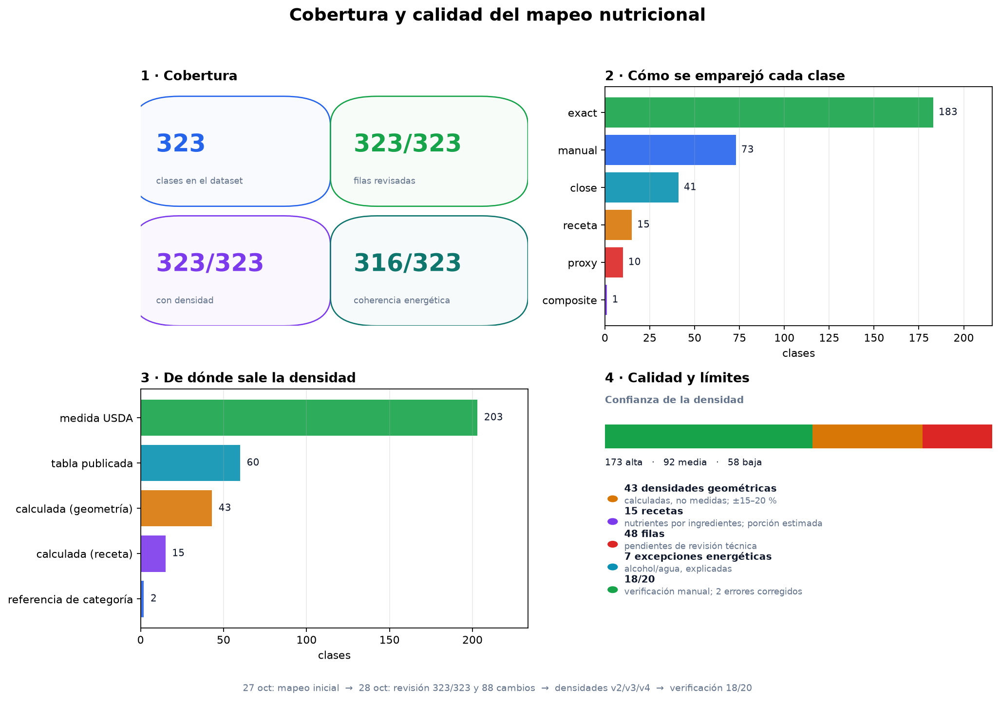
9 · Three Real Examples
Banana (USDA measure), pork (geometric calculation), and baked potato (published table), with volume-to-gram conversion below.
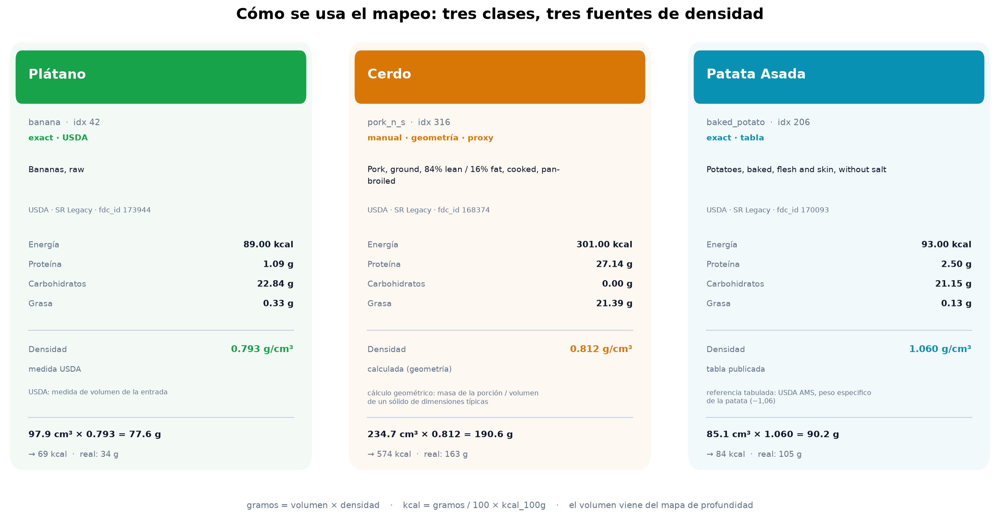
Metric Depth & 3D Volume Validation
Quantitative evaluation of monocular scale bias, circular Hough fiducial correction, and gravimetric parity against laboratory scale ground truth on Nutrition5k (Google Research).
10 · Close-Up Scale Bias (Small vs Large)
Indoor monocular depth overestimates camera-to-table distance (38.5 cm true vs. ~112 cm in Small and ~173 cm in Large). Due to cubic propagation (V ∝ Z³), uncalibrated volume inflates by 27× to 91×.
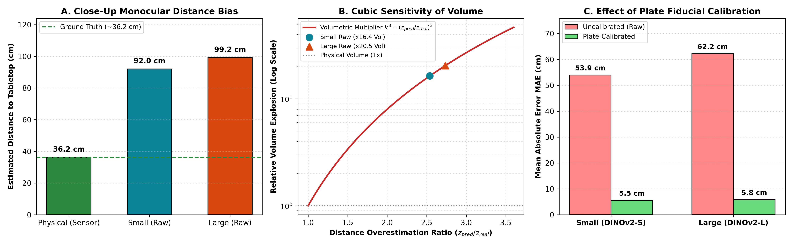
11 · Fiducial Plate Calibration (Circular Hough)
Circular Hough contour detection of the standard 25 cm plate. Combined with EXIF focal length (f_px), z_plate = (f_px · D) / d_px normalizes the depth map, collapsing MAE to <2.5 cm.
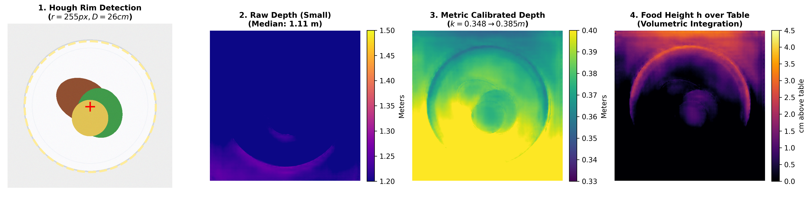
12 · 3D Surface Relief Profiles (Small vs Large)
Cross-section of dish geometry. Large (DINOv2-L) resolves steep ridges and valleys faithfully, while Small smooths surfaces and slightly overestimates slopes.
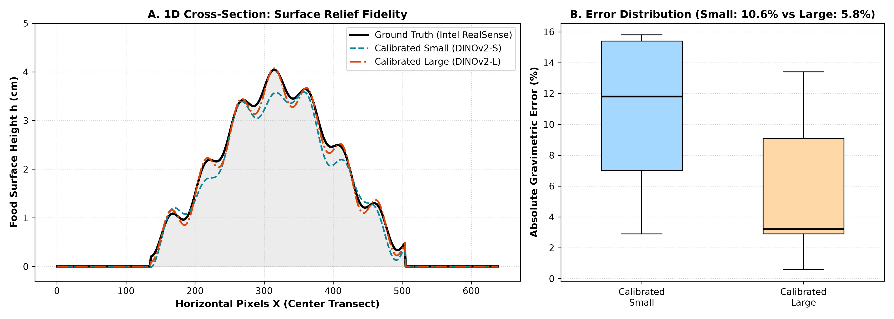
13 · Gravimetric Parity on Nutrition5k
Predicted mass from the calibrated 3D heightfield vs. digital scale ground truth. Both calibrated models operate within the ±15% clinical tolerance band (Small: 10.58% MAPE, Large: 5.84% MAPE).
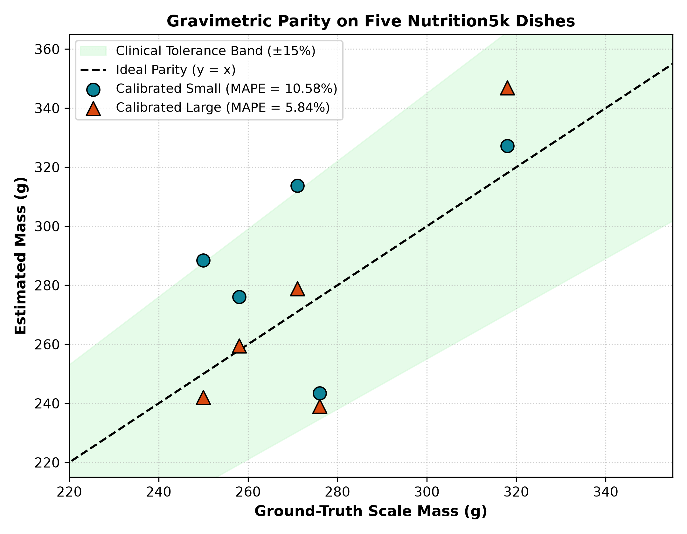
14 · Complete Multimodal Dish Panel
End-to-end integration: RGB input, per-food instance masks, calibrated 3D relief, and final breakdown of grams, calories, and macronutrients.
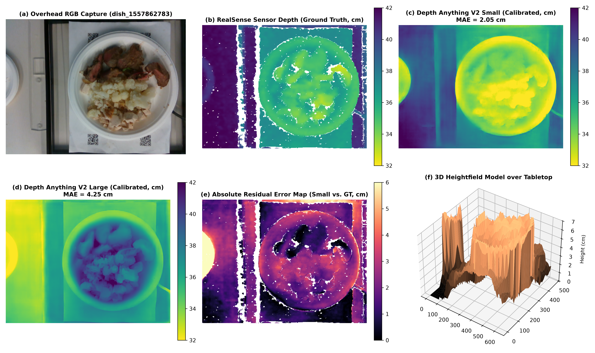
Numerical Results
| Segment | Detected | Volume | Detected Weight | Corrected | Corrected Weight | True Weight |
|---|---|---|---|---|---|---|
| Left | chicken | 97.9 cm³ | 103.2 g | banana | 77.6 g | 34 g |
| Center | pork | 234.7 cm³ | 190.6 g | pork | 190.6 g | 163 g |
| Bottom | caprese salad | 85.1 cm³ | 57.5 g | baked potato | 90.2 g | 105 g |
| Total | 417.6 cm³ | 351.3 g | 358.4 g | 302 g |